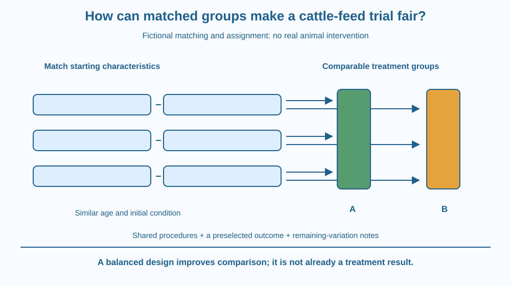

Explain how matched comparison groups help investigate a feed-related question. Identify confounders, random assignment within suitable groups and clearly defined outcomes. Use a paper-only example and distinguish a fair design from instructions to experiment on animals.
Two cattle groups receive different feeds. One group grows more during the observation period. A quick report credits the feed, but the larger-gaining group also began younger, healthier or under different housing conditions.
The recorded difference could combine several causes. A useful trial tries to make the groups comparable before attributing the outcome to the factor being studied.
Matching is a way to reduce some starting differences. It is not a guarantee that animals become identical or that an experiment is ethically justified merely because its table looks balanced.
A confounder is a factor connected with both the treatment comparison and the outcome in a way that can confuse interpretation. Age, initial size, health status and management can influence feed-related measurements.
The treatment is the planned factor being compared, such as two professionally approved feeding arrangements. The outcome must be defined before seeing results. It might concern growth over a specified interval, but the precise choice depends on the scientific and welfare context.
Matching creates comparison units or groups with similar relevant starting characteristics. For example, a paper model can pair animals of comparable age and initial mass. This reduces the chance that one treatment group begins with all the initially advantaged cases.
Within suitable matched pairs or blocks, random assignment can distribute the approved treatments without choosing according to expected performance. This helps protect against deliberate or unconscious selection based on the outcome one hopes to obtain.
Known management conditions should remain comparable where the question requires it. Housing, water access, observation duration and measurement method can all affect results. Changing feed while also changing several management conditions weakens a feed-specific interpretation.
Matching does not remove every difference. Animals vary in ways not fully captured by a short record. Repeated units, adequate records and an appropriate analysis matter. A small classroom dataset cannot establish a universal feed recommendation for every breed or setting.
Outcome measurement needs consistency. Measuring mass at different stages of feeding or with different equipment can introduce variation. The paper design should specify a common procedure rather than assuming every number labelled mass is directly comparable.
Real animal work requires qualified supervision, welfare safeguards and appropriate review. Students must not change a pet's or farm animal's food to implement this lesson. We use fictional records to learn experimental reasoning, not provide nutrition or veterinary advice.
Make a table with starting characteristics before adding any outcome column. Pair comparable fictional records, then assign one member of each pair to each model treatment using an unbiased paper method.
Draw a line from each potential confounder to the outcome. Controls and matching reduce specified pathways in the design; they do not erase biological variation. Keep an uncertainty box for factors not represented in the table.
Finally add an outcome only after the plan is defined. This order discourages selecting a preferred endpoint or rearranging groups after seeing which result makes a treatment look strongest.
The SVG shows fictional cattle records paired by similar starting characteristics. Each pair contributes one record to each treatment group, and shared management conditions sit between the groups.
A separate output panel labels a preselected outcome and common measurement procedure. No growth values, feed doses or real animal images are needed to explain the design.
The drawing is an experimental-design model. It does not certify that a real intervention is suitable, harmless or justified, and it does not claim that matching alone proves a causal effect.

Agricultural research uses careful comparisons because animals and their environments differ. A result may be relevant to a particular population and management arrangement without automatically applying everywhere.
An Indian dairy farmer's practical decisions can depend on locally appropriate professional guidance and the animals' needs. A classroom example does not replace that expertise or provide a new feeding programme.
The reasoning also transfers to plant or materials trials. Before crediting one changed factor, ask whether the groups began comparably and whether another systematic difference could explain the outcome. The lesson stays focused on that logic rather than repeating digestion or cellular energy mechanisms.
Use six fictional paper records with labels for age group and starting size. Do not use or alter the care of real animals.
The labels are invented and contain no real performance statistics. Explain what matching improves and what remains uncertain. A tidy balanced layout is a design feature, not evidence that treatment A or B has already worked.
If every younger record goes to A and every older record to B, why is a later difference hard to attribute to feed? Describe the pathway linking age with the outcome.
Now imagine perfectly matched starting cards but different observation durations. Which design problem has reappeared? Fair starting groups do not compensate for a procedure that changes systematically between treatments.
What is a confounder in the model trial?
Answer: B — A factor such as age can systematically influence the outcome alongside the treatment.
Why assign treatments within suitable matched pairs?
Answer: C — Matching and unbiased assignment help prevent one group collecting the initial advantages.
Groups are matched but measured over different durations. What is the best response?
Answer: A — Different durations can affect outcomes independently of feed and weaken the comparison.
Create a one-page fictional trial plan with a question, matching criteria, assignment procedure, shared conditions and an outcome definition. Include a welfare statement that no real animal intervention is part of the classroom exercise.
Ask a partner to find a possible confounder before adding invented results. Revise the plan rather than hiding the factor. Your conclusion must distinguish a better design from actual evidence that one feeding arrangement improves performance.
A difference between group averages is not automatically a treatment effect. It can reflect who entered each group and how they were managed. Designing the comparison before collecting outcomes helps separate the question one wants to answer from the many other differences the world supplies.
Matched groups and suitable assignment reduce some confounding, but shared procedures, remaining variation and welfare constraints still determine what a feed trial can establish.